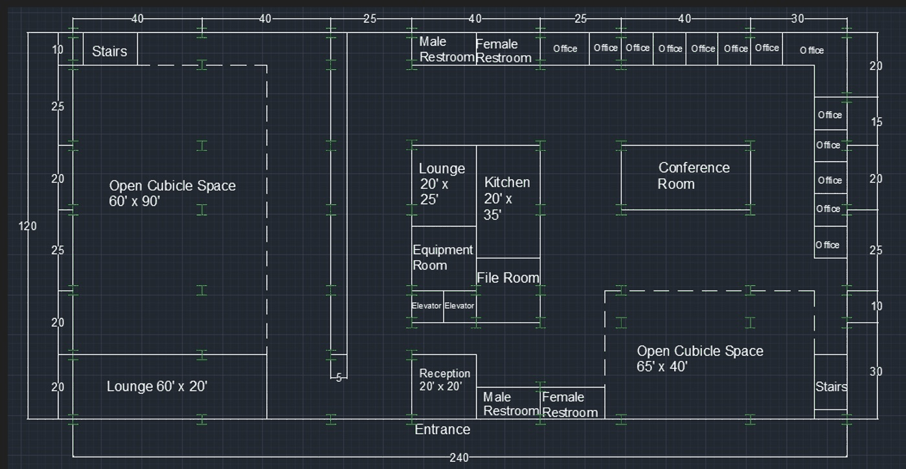
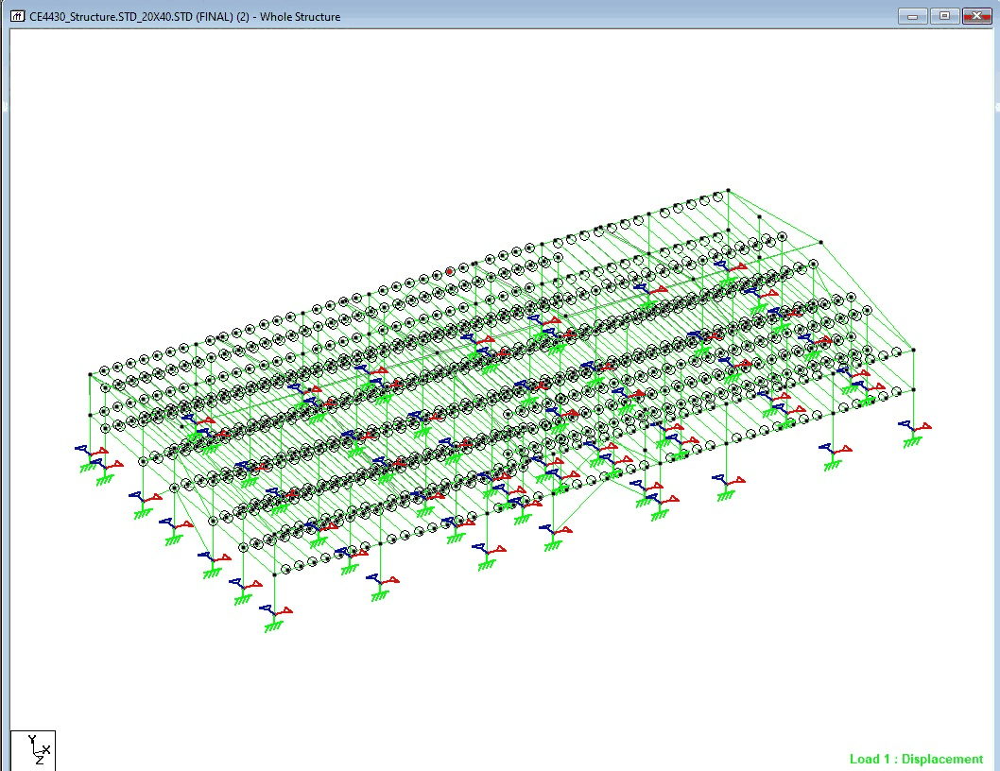
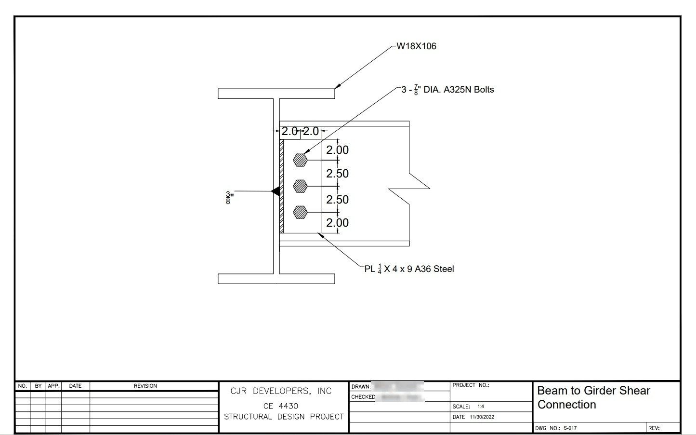
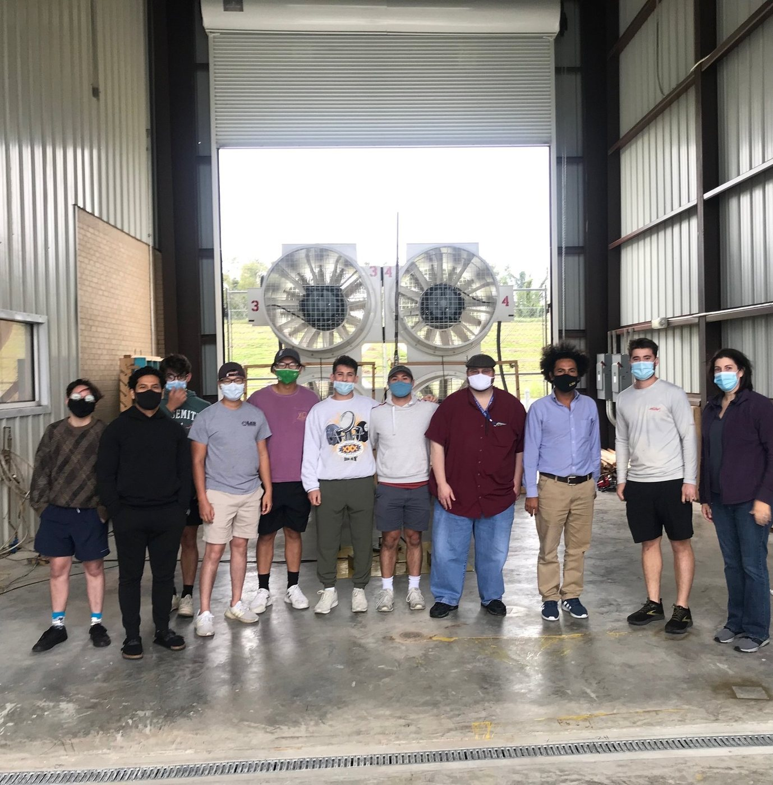
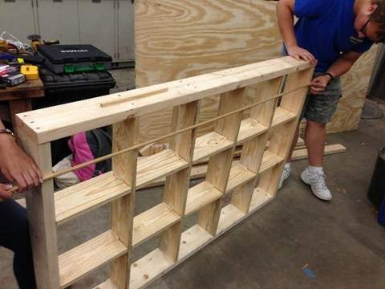
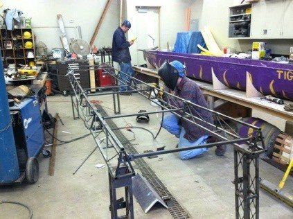
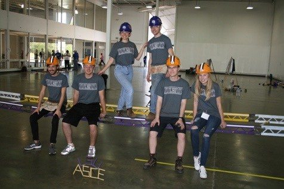
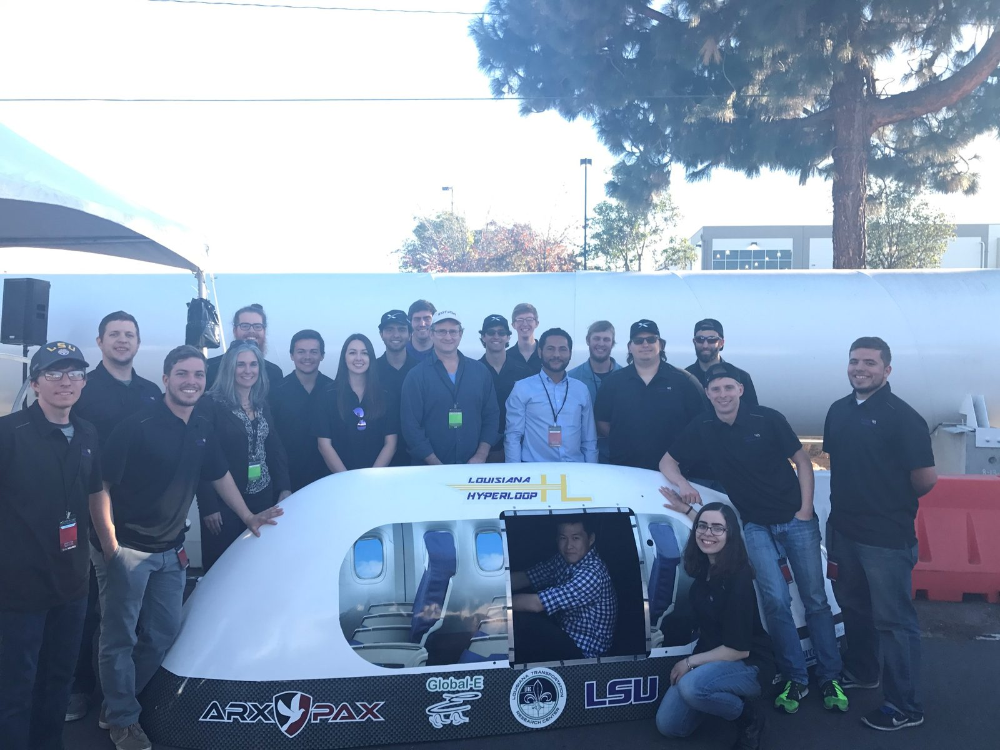
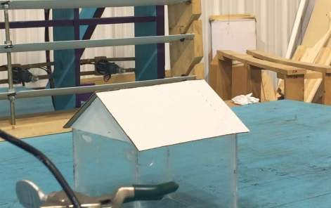

Teaching
Courses, methods, mentoring, and outreach by Dr. Aly at Louisiana State University.
Philosophy
In Dr. Aly's words.
I want students to learn by doing. My goal is a learning environment where students are challenged to master in-demand skills, solve real problems, and communicate their work clearly. I combine project-based learning, collaborative problem-solving, and individual accountability, and I treat teaching as a process that requires continuous reflection and adjustment.
Teaching at a glance
From official LSU course evaluations.
Course evaluations average 4.50 of 5 across 18 evaluations since 2019 (excluding one term with a single respondent), 4.82 in graduate courses, and 4.92 in Wind Engineering (Spring 2024); the structural engineering capstone scored 4.63 (Fall 2024). In Spring 2026, 20 of 21 students in Principles of Steel Design responded: the instructor rating was 4.71, and “Overall, the instructor was an effective teacher” scored 4.90.
“Dr Aly is by far one of the best professors at LSU. He thoroughly cares about the subject material and about his students.”
“One of the best professors I have had at LSU and made me want to get into steel design more than what I thought I would.”
“I greatly appreciated how Dr. Aly encouraged participation in the class. It boosted my learning.”
“Hard class but a great professor.”
Anonymous student comments, official LSU course evaluation, Principles of Steel Design, Spring 2026.
Courses at LSU
Dr. Aly created the graduate courses in Wind Engineering and Structural Control, and led the certification of CE 3415, CE 4430, and CE 4435 as communication-intensive courses under LSU's Communication across the Curriculum program.
| Course | Title | Level |
|---|---|---|
| CE 2460 | Dynamics and Vibrations | Undergraduate |
| CE 3415 | Structural Analysis I | Undergraduate, communication-intensive |
| CE 4435 | Indeterminate Structural Analysis | Undergraduate, communication-intensive |
| CE 4400 | Principles of Steel Design | Undergraduate and graduate |
| CE 4430 | Structural Engineering Senior Capstone | Undergraduate, communication-intensive |
| CE 7430 | Design of Structures for Dynamic Loads | Graduate |
| CE 7700 | Wind Engineering | Graduate; created by Dr. Aly |
| CE 7701 | Structural Control | Graduate; created by Dr. Aly |
| CE 7740 | Masters Report | Graduate supervision |
The capstone as a design office
CE 4430 Structural Engineering, taught six times, including Fall 2026.
Senior teams of three to five take a two-story steel building from site and layout to construction drawings, a design report, quantities, and a cost estimate. Along the way they compute wind loads to ASCE 7, model the frame in STAAD Pro, and design connections, bracing, base plates, and footings. The course runs like a small design office: a designer and a checker sign every calculation and drawing, and each team’s project manager answers for quality control.
Grades combine the team’s work (about 75%) with each student’s specialty area (about 25%), and a student who does not contribute receives a zero for that report. Biweekly work logs, monthly progress reports, and a confidential peer evaluation, which lowers the grade of anyone who rates teammates unfairly, keep everyone accountable. At least 40% of the grade rests on written and spoken communication, and the course maps to ABET student outcomes 1–7. Course syllabus, Fall 2026 (PDF).






Student work from CE 4430, shown at the AISC Educator Workshop (2023).
A new course, designed
A senior-level design elective in wind engineering, not yet offered.
Students build a complete wind-load package to ASCE 7 in five design studios: site wind speed, pressures on the main wind-force-resisting system, component and cladding zones, a cladding pressure schedule, and the load combinations that go to the analysis model. They generate the same loads in STAAD.Pro and reconcile them with their own hand calculations, then run a CFD simulation of flow around a building and compare its pressure coefficients with ASCE 7 and wind tunnel data. Professionally typeset lecture notes replace a textbook purchase, a clear policy covers generative AI tools, and the course is designed as communication-intensive, with additional requirements for graduate credit.
In the classroom
Methods drawn from documented practice.
- Project-based learning on real engineering problems: in steel design, students analyze a real project in STAAD Pro; in structural analysis, they use it to assess a local bridge.
- Computational tools built into courses, including OpenFOAM, ANSYS, MATLAB and SIMULINK, STAAD Pro, FTool, and AutoCAD, with applications of machine learning to CFD. In Wind Engineering, students simulate flow in OpenFOAM around the building visible from the lab window.
- Visits to active construction sites in steel design, and laboratory exercises that include testing in the WISE open-jet facility.
- Research findings used as teaching examples, such as the 45–63% reduction in roof forces from rooftop solar panels.
- Peer review, project presentations, mid-semester evaluations, and small-group discussions, with instruction adjusted during the term.
- Every semester opens with the same message: students have earned their place in engineering, they already have what it takes, and every question is welcome.


Recognition
Teaching awards and invited pedagogy.
- AISC Advancing Structural Steel Education Award, 2023.
- Outstanding Civil Engineering Educator Award, ASCE Baton Rouge Branch, 2017.
- Talk at the AISC Educator Workshop, Chicago, June 2023: “Empowering Student Success: Unlocking the Potential of Project-Based Steel Design Education.”
- Recognized by LSU’s Office of Academic Affairs (2024) for two years of work developing the Geaux Communicate Quality Enhancement Plan, supporting its expansion of communication-intensive teaching.
Video: Dr. Aly on teaching Video: working with undergraduate engineering students
Mentoring and advising
From first research experience to career.
Dr. Aly has guided 7 Ph.D. and 19 M.S. students to completion and mentored 20 undergraduate researchers and 2 postdoctoral researchers. Graduate students have co-authored 38 journal articles with him, and 7 are co-authored with students who began research in the group as undergraduates. Twice each year since 2013 he has advised 10–15 undergraduates one-on-one. Meet the team and alumni, or see how to join the group.
Student teams
What a classroom cannot teach: fabrication, budgets, deadlines, and responsibility to teammates.
Dr. Aly advised the LSU ASCE Student Chapter (Fall 2015 and Fall 2017–2019), supporting its Steel Bridge and Concrete Canoe teams, and the Louisiana Hyperloop Team (Fall 2015–2017). The Hyperloop students built a scaled pod, raised industry sponsorship, and took the pod to the SpaceX Hyperloop competition weekend, where it was tested. His role was to guide design, teamwork, and project management, and to connect the team with industry.



Outreach
As a first-generation college graduate, Dr. Aly builds pathways for students of every background.
- Speaker, Teen Science Café “Scientists & Teens Exploring Our World,” hosted by the LSU EnvironMentors program at the Carver Branch Library, Baton Rouge (November 29, 2018): a talk on windstorm research followed by a hurricane-engineering activity.
- A wind demonstration table for the Louisiana Art & Science Museum, built with undergraduate researcher Matthew Thomas: children predict which roof shape best resists wind, then test it.
- Mentor to four Kenilworth Science and Technology School students on wind-hazard projects (2015–2018), three of whom placed at the Region VII Science and Engineering Fair; judge at the Kenilworth science fair (2015, 2016) and the Louisiana STEM Expo.

Earlier teaching
Before LSU.
- Alexandria University, Mechanical Engineering: ME 342 Mechanical Vibrations; ME 343 Mechanical Design 3; ME 341 Mechanical Design 2; ME 246 Stress Analysis and Machine Design; ME 242 Computer Applications in Mechanical Engineering; JE 113 Applied Mechanics and Theory of Structures; ME 147 Machine Drawing; ME 144 Computer-Aided Mechanical Drawing; ME 142 Mechanical Drawing; ME 141 Mechanics of Materials.
- Pharos University in Alexandria: Automatic Control.
- Western University, Canada: guest lectures in Advances in Vibrations and Statics.
- Yangzhou University, China: invited graduate course in Wind Engineering.